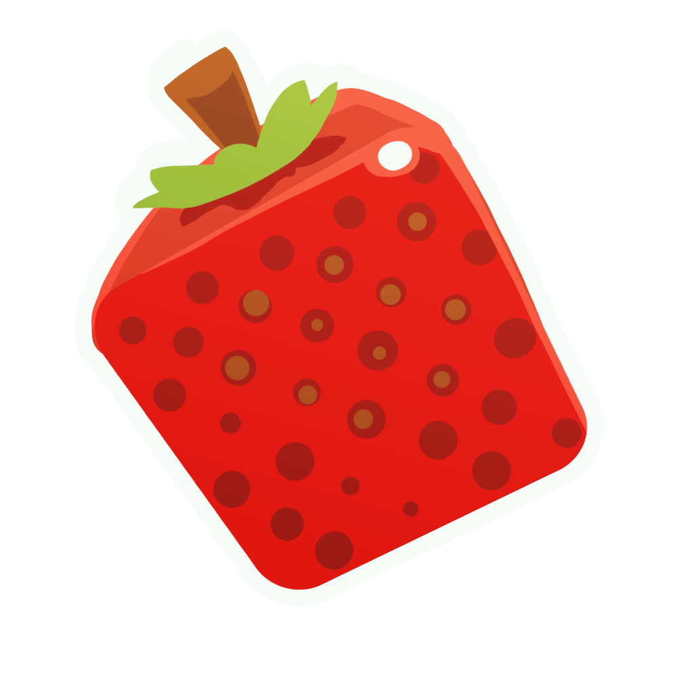
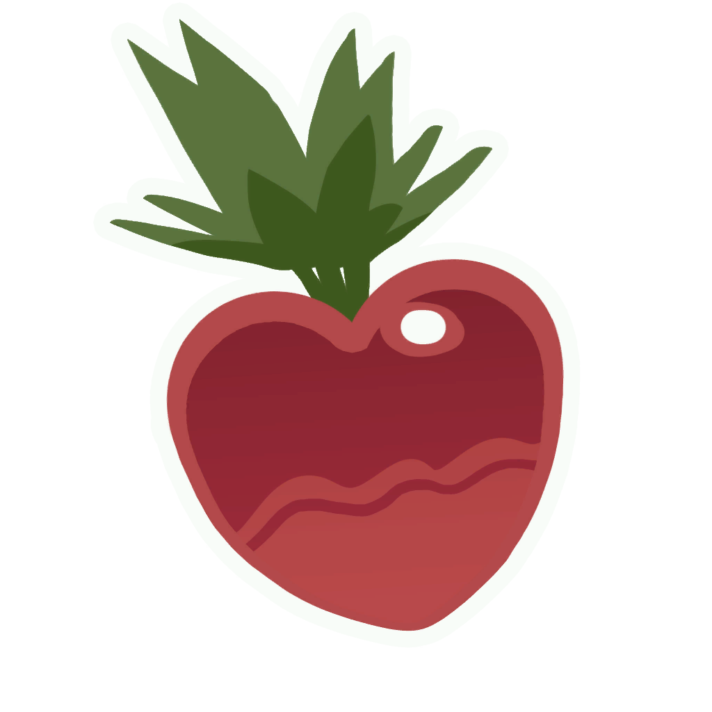
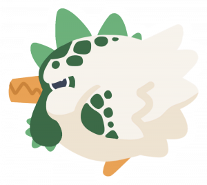

Here you can enjoy the finest cuisine this side of the Slime Sea, provided you have the digestion capabilities of your average Pink Slime!
If you don't...avoid trying everything on the menu. Click on the images for ingredient information!
Featured dishes

Cuberry Crumble
The sweetest dessert you can find out here! Just be wary of the fireflies on the island, they can't get enough of this stuff!

Heart-Stopping Salad
Does not actually stop hearts, but it will stop your hunger! It'll have you craving more, though despite the name, the beets
do not taste nor have the same nutritional value as meat. Rock slimes love this dish!

Hen Chops
We're not actually sure why the chhef chooses to make chops out of chicken. The meat-eaters don't seem to mind much though.
Feline slimes love this, as do explosive ones. Keep an eye out for Tarr, though!